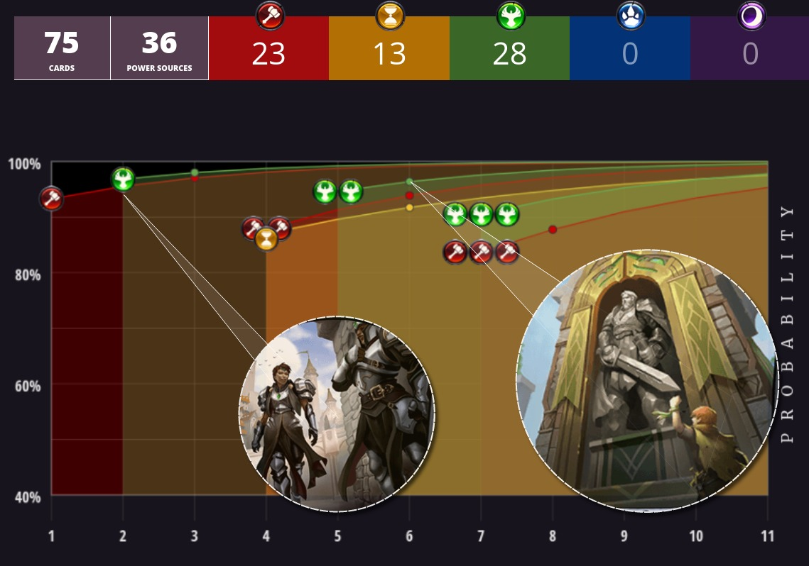

Four decks, four Power bases, one winner
all four of his winnning lists from the Eternal Community League's
inaugural Sunday Challenge event. We talk Power, Crests, fixing and
the merits of Privilege of Rank.
Shiftstoned caught up with him recently to disuss the results of his recent first-place finish at ECL's Sunday Challenge, an event that uses a Conquest format where each participant brings four decks to battle with.
You chose this list for one of your four decks on Sunday as part of the event's Conquest format. But the origins of it stretch back a while...
camat0:
This is the first deck I built with the Fall of Argenport. In fact I built this deck the day after Fall of Argenport was legal, and it has changed very little from there.
But this version of FJS is basically an updated version of Removal Pile, the deck I made to break the Tavrod meta back in early 2018.
At that time, manuS and I finished first and second in the Eternal Tournament Series weekly swiss event with that version of the deck, the first tournament we ever played it.
Since then, some things have changed in the way Power bases are built in Eternal. One of the major differences between this list and the previous versions appears to be the inclusion of all 12 available Crests.
How do you think this has improved the deck?
camat0:
Crests changed the game at a fundamental level. They not only made every Control and Midrange deck more consistent, but they also allow Control decks to play more Power without flooding out.
Now that we have all ten of the Crests, I think every Control deck that plays three colors should play at least one or two more Power cards than they used too. In the end, I find more Power makes your deck work better in every way now.
Also the existence of Crests makes it really hard to justify two color Control decks any more. You want the Crest even if they are off-color, and at that point splashing another color is just too easy.
It looks like you also added an extra copy of Privilege of Rank, another Power source....
camat0:
Many people play Privilege of Rank only because it has synergy with Bulletshaper or other discard effects, when the truth is that the card is just good.
I'm happy to hard cast the card in a lot of decks, but most people don't and I think that is why it was so underplayed.



For a while now, Divining Rod has allowed players to cheat out units that their Power base wouldn’t normally support by playing them automatically from the deck rather than from hand. But it has remained something of a fringe strategy. What has changed?
camat0:
The key for Charge Rod was to stop playing the cards (like Heart of the Vault or Alluring Ember) that made the Power base so hard. This last version of the deck has a very good Power base, so hard casting your cards [ie: playing them from hand] is not a problem at all if you can survive.
Still, the Influence Chart demonstrates that there is a lot of competition for hitting fairly demanding Influence requirements in the mid to late game. With only a moderate amount of additional card draw. What makes this possible?
camat0:
I do believe one of the most important cards in the deck is again Privilege of Rank because the deck is so Power hungry, and basically can't win if you don't hit six power on Turn 6 [for Answer the Call].
I do believe one of the most important cards in the deck is again Privilege of Rank because the deck is so Power hungry, and basically can't win if you don't hit six power on Turn 6 [for Answer the Call].
And to play that card, it was necessary to make the deck almost exclusively Rakano (FJ), and only splash the most necessary card from Time - Divining Rod.
I also play Diogo Málaga because it is not that hard to make it playable once we already play Divining Rod and he is very important for the early game of the deck.
Granite Waystone is also a particularly great Power card in this deck. It gives you you a free card to exchange in the Market, and also this little 1/1 transforms into a real threat when you play Kaleb, Uncrowned Prince.
The addition of Answer the Call has added weapons to the Charge Rod strategy of cheating out units, and pushed this deck into more mainstream success. Is it the 6JJ spell [now 7JJ] that holds it all together?
camat0:
Yes, Answer the Call is the best card in the deck by a lot. You can win a game from an empty board with Answer the Call. Because you have like a 30% chance to hit Divining Rod and more than 75% to hit a Charge unit, so you make crazy stuff a lot of the time.
Yes, Answer the Call is the best card in the deck by a lot. You can win a game from an empty board with Answer the Call. Because you have like a 30% chance to hit Divining Rod and more than 75% to hit a Charge unit, so you make crazy stuff a lot of the time.
You wrote at length about your thoughts on Charge Rod as part of your weekly metagame analysis on the Eternal Titans website. In addition to thanking your team mate Grimfan for his role in the deck’s evolution, you spoke frankly about your feelings towards so-called “unfair” decks (ie: decks that win with explosive or high-rolling combos) in Eternal.
Do the cards exist now for more unfair decks that have yet to be discovered or refined? Dramatist’s Mask for example...
camat0:
I don't think Dramatist’s Mask will see competitive play, because it is just to easy to interact with for the opponent.
I don't think Dramatist’s Mask will see competitive play, because it is just to easy to interact with for the opponent.
But I do think the game is very friendly to unfair decks in general right now. Markets in particular made a lot of unfair decks possible with the consistency they add to the deck

Part III - Even higher voltage Shiftstoned recently featured an article on a first-place tournament deck that included 39 Power Sources, which seemed pretty extreme at the time. Yet camat0’s list contains no less than 41 Power Sources - well over half of the 75 cards in the deck. Are we seeing an escalating Power meta?

What makes Power so important in a deck that tops out at 4? (Or 6 if you include Sword of Unity’s Spellcraft...)
camat0:
Turns out that playing Initiate of the Sands into Trail Maker into 3 more units, and playing Stand Together or Sword of Unity before Turn 5 beats most slow decks. It is just too much pressure and they can’t even answer it with Harsh Rule [due to all the units with Aegis].
This deck is all about curving out into Stand Together or Sword of Unity. Once you do that, they lose because they are too far behind in the board and can't play a board clear. So the Power is really important to make sure you can accomplish that.
This deck seems to play pretty fast. How would you characterize it? Is is Aggressive? Midrange? Aggressive midrange? Something different?
camat0:
I will say this is a Midrange deck, but most of the time it plays like a hyper aggressive deck. In this case I don't think the deck is great - really it is mediocre - but I made it to target slow decks, just to punish slow decks in the tournament.
And also you have the Plan B of using Ironfist Chancellor each turn if you stall. It is not that hard to protect him. And in particular if you ever play Sword of Unity on him, he becomes a nightmare for any deck.
Did you consider including any Standards for the synergy with Alessi?
camat0:
I don't want Standards in this deck because it is all about curving out. The extra cards are way less important than having the board early and casting Stand Together on it.
I don't want Standards in this deck because it is all about curving out. The extra cards are way less important than having the board early and casting Stand Together on it.


What were your thoughts when constructing the Power base for TJP Hatebears?
camato:
To make a power base that can support Initiate of the Sands on Turn 1 and Teacher of Humility on Turn 2, I needed to make a sacrifice and and only splash the other colors.
To make a power base that can support Initiate of the Sands on Turn 1 and Teacher of Humility on Turn 2, I needed to make a sacrifice and and only splash the other colors.
As you can see I don't play [higher Influence] cards like Valkyrie Enforcer (JJ) or Hooru Pacifier (JJP). I would love to have them in the deck, but I just can't support them.
That brings up a great point that newer deck builders may be able to learn from. When building a three color Power base. you often want to prioritize cards in a certain color. So you are probably better off playing weaker cards (with lower Influence) in the other colors. Having more powerful (and more costly) cards doesn’t help you if you can’t reliably play them.
camat0:
For sure. In general I say that people play less Power or fixing [ie: Influence sources for secondary colors] than they should.
For sure. In general I say that people play less Power or fixing [ie: Influence sources for secondary colors] than they should.
Shiftstoned:
Although you have one Crystallize in the Market, every other card in this deck is either Time or only has a single influence in any one color (including JP and TP).
Although you have one Crystallize in the Market, every other card in this deck is either Time or only has a single influence in any one color (including JP and TP).
This allows you to hit your priority Influence requirements quite reliably. And all this is accomplished without any additional card draw beyond Seek Power.
camat0:
The key in this Power base is Diplomatic Seal. It is this card that allows you to build three color Power bases for aggressive decks.
Shiftstoned:
Right. Diplomatic Seal provides Undepleted Power, which is great to have as long as you are able to hit your Influence requirements. It is also worth mentioning that you have a lot more potential for Undepleted Power, in the form of Seats instead of Crests. This helps to ensure that your important units can be played on curve at every stage of the game. It is a very different approach from the FJS Control deck we were looking at earlier.
Right. Diplomatic Seal provides Undepleted Power, which is great to have as long as you are able to hit your Influence requirements. It is also worth mentioning that you have a lot more potential for Undepleted Power, in the form of Seats instead of Crests. This helps to ensure that your important units can be played on curve at every stage of the game. It is a very different approach from the FJS Control deck we were looking at earlier.
Camat0:
Yes, as you say I only have 2 Crests, and the reason for that is to have most of my power Undepleted. With 2 Crests and 4 Seek Power, I will draw less than two of them in most of my hands - making the deck curve out most of the time.
Yes, as you say I only have 2 Crests, and the reason for that is to have most of my power Undepleted. With 2 Crests and 4 Seek Power, I will draw less than two of them in most of my hands - making the deck curve out most of the time.
What does the future hold for TJP Hatebears?
camat0:
This is a very powerful deck and I think it is good, but it is not great. I'm not sure what is missing yet to make this deck great, but for sure I think it has a lot of potential.
This is a very powerful deck and I think it is good, but it is not great. I'm not sure what is missing yet to make this deck great, but for sure I think it has a lot of potential.
We are all looking forward to seeing what you come up with next camat0.
Congratulations on your first place finish in the debut of Eternal Community League's Sunday Challenge. Hope you will Answer the Call and return to Shiftstoned again next time we ask for an interview.
camat0:
Jajajaja